기상기사 (2017-08-26 기출문제)
1과목: 기상관측법
1. 최고·최저온도에 대한 설명으로 틀린 것은?
- 겸용 최고·최저온도계는 기온의 상승·하강 시 지표의 한쪽 방향으로만 움직이게 한 것이 주원리이다.
- 분리형 최저온도계는 알코올 속에 지표를 넣어 두어 지표가 표면장력에 의하여 끌려 내려오게 한 것이 원리이다.
- 분리형 최저온도계의 복도(reset)는 내려오지 않는 수은을 수은사 부분을 잡고 강제로 강하게 내려 뿌려서 현재 기온으로 한다.
- 분리형 최고온도계는 수은을 이용하여 유리봉으로 유점을 만들어 기온이 상승할 때 일방통행으로 상승하게만 만든 것이 주원리이다.
(정답률: 76%)

2. 용오름(Water spout)에 관한 설명으로 틀린 것은?
- 대기중의 물현상에 속한다.
- Cb의 운저로부터 발생된다.
- 지면가열로 인한 회오리 바람과 같은 성질로 갖는다.
- 기둥이나 깔때기모양으로 보이는 격렬한 회전풍으 가진다.
(정답률: 50%)
3. 정지 기상위성에 대한 설명으로 옳은 것은?
- 다른 천체에서 위성을 보았을 때 정지되어 있다.
- 정지 위성 한 개로 지구 전 지역과 연결하여 통신할 수 있다.
- 위성이 지구의 관측자와 같은 선속도(접선속도)로 회전한다.
- 위성의 공전주기가 지구의 자전주기와 일치하고, 위성의 궤도는 지구의 적도면과 일치한다.
(정답률: 75%)
4. 빗방울이라 함은 대기중을 통하여 떨어지는 직경 몇 mm 이상의 것을 말하는가?
- 20 μm 이상
- 50 μm 이상
- 0.2 mm 이상
- 0.5 mm 이상
(정답률: 67%)
5. 주간 시정의 관측에서 목표물의 색깔과 배경에 대한 조건 중 옳은 것은?
- 흰색 - 안개
- 밝은색 - 안개
- 검은색 – 안개 또는 하늘
- 밝은색 – 안개 또는 하늘
(정답률: 80%)
6. 중위도 지방에서 일반적으로 빙정(氷晶)이 가장 적게 포함된 구름은?
- 권운(Ci)
- 층운(St)
- 고층운(As)
- 적란운(Cb)
(정답률: 66%)
7. 시정관측에 대한 설명으로 옳은 것은?
- 시정관측은 목측이나 자동시정계로 관측한다.
- 시정관측은 반드시 경위의를 사용해서 관측한다.
- 시정관측은 반드시 망원경을 사용해서 관측한다.
- 시정관측은 반드시 쌍안경을 사용해서 관측한다.
(정답률: 89%)
8. 항공기상 관측 시 운량의 표시방법으로 틀린 것은?
- 1/8 ~ 2/8 oktas : SKC(Sky clear)
- 3/8 ~ 4/8 oktas : SCT(Scattered)
- 5/8 ~ 7/8 oktas : BKN(Broken)
- 8/8 oktas : OVC(Overcast)
(정답률: 80%)
9. 바람 관측에 이용되지 않는 것은?
- 모발
- 풍압
- 초음파
- 가열체 냉각
(정답률: 84%)
10. 대기의 전기 현상을 나타내는 기호가 틀린 것은?
- 뇌전 –
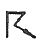
- 천둥 –
- 극광 –
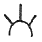
- 세인트 엘모의 불 –
(정답률: 74%)
11. 알베도(alvedo)측정에 이용되는 일사계는?
- 은반 일사계
- 수평면 일사계
- 스펙트럼 일사계
- 옹스트롬(Angstrom) 일사계
(정답률: 75%)
12. 구름의 분류에 따른 종류의 연결이 틀린 것은?
- 상층운 – Ci, Cs
- 중층운 – As, Ac
- 하층운 – St, Sc
- 수직운 – Cu, Cc
(정답률: 90%)
13. 라이도존데에서 직접 관측하지 않는 기상요소는?
- 기온
- 기압
- 운량
- 습도
(정답률: 87%)
14. 고층대기 관측장비와 이들 장비가 발사하는 신호를 후방산란시키는 매개물로 잘못 짝지어진 것은?
- Mie LIDAR - 에어로솔
- RASS – 대기분자의 불연속
- RADAR – 강수 및 구름입자
- SODAR – 대기난류에 의한 음파
(정답률: 72%)
15. 백엽상 주위(노장)에 잔디를 심는 가장 중요한 이유는?
- 먼지가 나지 않도록
- 빗물이 튀지 않도록
- 일사의 지면에 의한 반사를 막기 위하여
- 노장이라는 것을 표시하여 사람의 출입을 막기 위하여
(정답률: 86%)
16. 기압값의 보정 시 관측소의 중력이 표준중력보다 클 때 (A)와 작을 때 (B) 중력 보정값의 가감은?
- A : 더한다, B : 더한다.
- A : 더한다, B : 감한다.
- A : 감한다, B : 감한다.
- A : 감한다, B : 더한다.
(정답률: 74%)
17. 도플러 기상레이더에서 생산되는 원시자료가 아닌 것은?
- 강수량
- 반사강도
- 스펨트럼폭
- 도플러 시선속도
(정답률: 64%)
18. 위성에서 탐지하는 화소의 반경이 4km에서 1km로 향상되었다면 공간 해상도는 몇 배가 향상된 것인가?
- 1배
- 4배
- 8배
- 16배
(정답률: 74%)
19. 우량계(수수구 직경 20cm)로 강우량을 수집한 결과 약 1L의 물을 얻었다. 강우량은 대략 얼마나 되는가?
- 1.6mm
- 8mm
- 32mm
- 51mm
(정답률: 64%)
20. 뷰포트 풍력계급에서 계급 2(light breeze)에 해당되지 않는 것은?
- 풍속 1.3 m/s
- 풍속 1.8 m/s
- 풍속 2.3 m/s
- 풍속 2.8 m/s
(정답률: 67%)
2과목: 대기열역학
21. 다음 선도 중 등온선이 곡선인 것은?
- Emagram
- Tephigram
- Stüve 선도
- Clapeyron 선도
(정답률: 58%)
22. 건조공기의 기체상수를 Rd, 수증기의 기체상수를 Rv라고 하면,
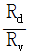
는 약 얼마인가?- 0.355
- 0.427
- 0.622
- 1.608
(정답률: 80%)
23. 기압의 고도에 따른 감소율(
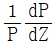
)을 나타낸 식은? (단,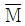
공기의 평균 분자량, R은 보편 기체상수, g는 중력가속도, T는 기온이다.)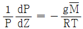
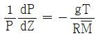
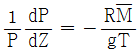
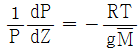
(정답률: 64%)
24. 물의 포화수증기압 및 포화수증기밀도에 관한 설명으로 틀린 것은?
- 포화수증기압은 온도가 높을수록 크다.
- 포화수증기밀도는 온도가 높을수록 크다.
- 0℃에서 포화수증기압은 약 6.11 hPa 이다.
- 과냉각물에 대한 포화수증기압은 같은 온도의 얼음에 대한 포화수증기압보다 작다.
(정답률: 72%)
25. 대기중에서 기압이 P1, P2 인 두 고도면의 층후 즉, 층의 두께는 가온도(또는 온도)와 어떤 관계가 있는가?
- 그 층의 평균 가온도(또는 온도)에 정비례한다.
- 그 층의 평균 가온도(또는 온도)에 반비례한다.
- 그 층의 평균 가온도(또는 온도)의 제곱에 정비례한다.
- 그 층의 평균 가온도(또는 온도)의 제곱에 반비례한다.
(정답률: 82%)
26. 1g의 공기괴에 대해 420K에서 10cal의 열을 가해 주었다. 엔트로피(entropy)의 변화량(Jg-1K-1)은?
- 0.01
- 0.1
- 10
- 100
(정답률: 58%)
27. 기온이 15℃일 때 상대습도를 구하기 위해 노점온도를 보니 11℃였다. 상대 습도는? (단, 11℃와 15℃에서 포화수증기압을 각각 9.7mmHg와 12.8mmHg 이다.)
- 약 63%
- 약 66%
- 약 73%
- 약 76%
(정답률: 56%)
28. e-folding 깊이가 5km인 임의의 등온대기의 기온은? (단, 이 행성대기의 기체상수와 중력가속도는 각각 150 JK-1kg-1와 8ms-2 이다.)
- -6.3℃
- 3.75℃
- 6.0℃
- 33.0℃
(정답률: 52%)
29. 포화단열과정에 관한 설명으로 적절한 것은?
- 가역과정
- 등온과정
- 등적과정
- 비가역과정
(정답률: 72%)
30. 건조단열감율은 어느 식으로부터 유도되는가?
- 상태 방정식과 정역학 방정식
- 정역학 방정식과 연속 방정식
- 연속 방정식과 열역학 제1법칙
- 정역학 방정식과 열역학 제1법칙
(정답률: 64%)
31. 초기의 기온 감률에 관계없이 공기층이 상승하여 포화된 후 안정한 경우를 무엇이라고 하는가?
- 대류안정
- 잠재안정
- 절대안정
- 위잠재안정
(정답률: 84%)
32. 위단열(pseudo adiabatic)팽창을 할 경우 온위는?
- 보존된다.
- 증가한다.
- 감소한다.
- 증가하기도 하고 감소하기도 한다.
(정답률: 58%)
33. 20℃에서 수증기압이 9hPa일 때 수증기의 밀도(kg·m-3)는? (단, 보편기체상수 = 8.314 Jmol-1K-1)
- 6.67
- 6.67 × 10-1
- 6.67 × 10-2
- 6.67 × 10-3
(정답률: 63%)
34. 정압비열 Cp가
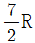
일 때 정적비열 Cv의 값은?- R
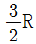
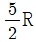
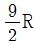
(정답률: 84%)
35. Skew T – log P 단열선도에 표시되어 있는 등치선만을 나열해 놓은 것은?
- 등고선, 등비적선, 등온선, 등온위성
- 등압선, 등온선, 건조단열선, 포화혼합비선
- 등풍향선, 등압선, 등강수량선, 건조단열선
- 건조단열선, 습윤단열선, 등풍속선, 등습도선
(정답률: 89%)
36. 기압이 1000 hPa이고 기온이 10℃인 공기덩이의 비체적(specific volume)은? (단, 비기체 상수는 287 J kg-1K-1 이다.)
- 0.01 m3/kg
- 0.10 m3/kg
- 0.812 m3/kg
- 8.12 m3/kg
(정답률: 70%)
37. 습윤단열과정(most adiabatic process)과 위단열과정(pseudo-adiabatic process)에 관한 설명으로 틀린 것은?
- 실제 대기는 습윤단열과정과 위단열과정의 중간 과정에 있다.
- 위단열과정은 건조급, 성우급, 성설급의 3단계로 나뉜다.
- 습윤단열과정은 응결한 수분이 즉시 낙하해 버리는 가역과정이다.
- 위단열과정은 응결한 수분이 즉시 낙하해 버리는 비가역과정이다.
(정답률: 67%)
38. 다음 중 열역학 제1법칙을 나타낸 식은? (단, P는 압력, α는 비체적, R은 비기체상수, T는 온도, △W는 단위질량당 한 일, △U는 단위질량당의 내부에너지, △Q는 단위질량당 가해진 열량, V는 부피, m은 분자량, Cv는 정적비열이다.)
- V = mα
- Pα = RT
- △U = Cv△T
- △Q = △U + △W
(정답률: 75%)
39. 기체상수가 189.0 JK-1kg-1인 기체의 분자량(kg kmol-1)은 대략 얼마인가? (단, universal gas constant는 8.3143 ×103 J kmol-1K-1 이다.)
- 11
- 22
- 44
- 88
(정답률: 61%)
40. 습윤공기의 상태방정식에 관여하지 않는 변수는?
- 기압
- 가온도
- 포화수증기압
- 건조공기의 기체상수
(정답률: 49%)
3과목: 대기운동학
41. 다음 중 남북 방향의 대기 대순환에서 가장 뚜렷한 부분은?
- 극세포
- 적도세포
- 페렐세포
- 해들리세포
(정답률: 88%)
42. 한랭이류가 나타날 수 있는 경우는?
- 850 hPa 남서풍, 700 hPa 서풍
- 850 hPa 북동풍, 700 hPa 동풍
- 850 hPa 남동풍, 700 hPa 남남동풍
- 850 hPa 북서풍, 700 hPa 서북서풍
(정답률: 71%)
43. 반경이 r인 원 주위를 Ω의 각속도로 회전하는 유체의 순환(Circulation)은?
- Ωπr
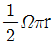
- 2Ωπr2
- 4Ωπr2
(정답률: 89%)
44. 지균풍에 관한 내용으로 틀린 것은?
- 등압선이 직선인 곳에서 나타나는 바람이다.
- 같은 기압경도력인 경우, 저위도로 갈수록 지균풍은 보다 강해진다.
- 북반구에서의 지균풍은 저기압을 왼쪽에 두고 등압선에 평행하게 분다.
- 마찰이 있는 상태에서 전향력과 기압경도력이 균형을 이룰 때 부는 바람이다.
(정답률: 64%)
45. 한 점에서 기온감률이 증가하는 경우는?
- 상층이 가열되고 하층이 냉각될 경우
- 상승속도가 고도에 따라 줄어드는 경우
- 하층에 온난이류, 상층에 한랭이류가 있는 경우
- 하층에 한랭이류, 상층에 온난이류가 있는 경우
(정답률: 72%)
46. 700 hPa 이하의 고도에서 저기압 쪽으로 바람이 불어 들어가는 가장 가까운 이유는?
- 지구자전
- 지표면의 마찰
- 공기밀도의 차
- 코리올리스 인자
(정답률: 71%)
47. 운동방정식을 이루는 다음 항 중에서 규모가 가장 큰 항은?
- 중력
- 마찰력
- 전향력
- 수평기압경도력
(정답률: 67%)
48. 북반구의 상층일기도에서 기압골과 능의 축이 남서쪽에서 북동쪽으로 기울어져 있다. 순 각운동량의 운송 방향은?
- 남쪽
- 북쪽
- 남서쪽
- 북동쪽
(정답률: 77%)
49. 상대와도(
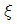
)와 순환(C)의 관계를 적절하게 표현한 식은? (단, A는 순환이 일어나는 임의 폐곡선의 면적이다.)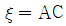
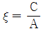
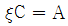
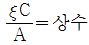
(정답률: 76%)
50. 구면좌표계(spherical coordinate)에서의 운동방정식을 대규모 공기의 운동에 적용하면 수직가속도 성분과 코리올리항을 무시할 수 있는데 이 때 얻을 수 있는 기본 방정식은?
- 연속 방정식
- 상태 방정식
- 에너지 방정식
- 정역학 방정식
(정답률: 80%)
51. 라니냐와 관련된 사항으로 옳은 것은?
- 무역풍의 약화와 관련되어 있다.
- 서태평양에서의 기압이 높아진다.
- 동태평양에서의 대류활동이 강화된다.
- 서태평양의 수온이 평년보다 증가한다.
(정답률: 80%)
52. 북반구에서 연직방향의 운동을 하는 물체에 작용하는 지구의 전향가속도(Coriolis acceleration)는?
- 남북 방향의 가속도가 생긴다.
- 동서 방향의 가속도가 생긴다.
- 연직 방향의 가속도가 생긴다.
- 전향가속도는 생기지 않는다.
(정답률: 61%)
53. 기압좌표계의 운동방정식에 관여하지 않는 요소는?
- 온도 이류
- 중력가속도
- 지오포텐셜
- 코리올리인자
(정답률: 71%)
54. 경압대기의 성질에 속하지 않는 것은?
- 발산이 존재한다.
- 등압면과 등온면이 교차한다.
- 등압면과 등온면이 평행한다.
- 지균풍이 높이에 따라 변화한다.
(정답률: 58%)
55. 대기중 로스비파(Rossby Wave) 유지에 중요한 기구는?
- 중력
- β - 효과
- 대기 안정도
- 지구 회전력
(정답률: 68%)
56. 코리올리 힘이 작용하지 않는 바람은?
- 온도풍(Thermal wind)
- 경도풍(Gradient wind)
- 지균풍(Geostropic wind)
- 선형풍(Cyclostrophic wind)
(정답률: 62%)
57. 풍속장(Wind field)을 아래 그림과 같이 유선으로 나타내었을 때 다음 중 어느 것과 가장 관계가 깊은가?
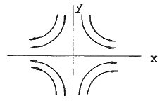
- 와도(vorticity)
- 발산(divergence)
- 변형(deformation)
- 병진 운동(translation)
(정답률: 67%)
58. 정상적인 사이클론성 흐름에서 지균풍과 경도풍의 크기를 서로 비교해 보면?
- 경우에 따라서 달라진다.
- 지균풍이 경도풍보다 강하다.
- 지균풍이 경도풍보다 약하다.
- 지균풍과 경도풍은 서로 같다.
(정답률: 63%)
59. 대기가 순압대기라고 할 때 공기덩어리가 적도에서 극 쪽으로 이동할 경우 나타나는 현상은?
- 상대와도는 감소한다.
- 상대와도는 증가한다.
- 절대와도는 감소한다.
- 절대와도는 증가한다.
(정답률: 54%)
60. 다음 중 중위도 저기압 시스템의 주된 발달기구(mechanism)는?
- 에디 운동 에너지
- 수증기 응결에 의한 잠열 방출
- 비균질 가열에 의한 에디 위치 에너지
- 비균질 가열에 의한 동서 평균 위치 에너지
(정답률: 54%)
4과목: 기후학
61. 계절에 따라 바람의 방향이 바뀌면서 발생하는 몬순현상의 원인은?
- 편서풍의 강도변화
- 대륙과 해양의 비열차
- 대기와 해양의 상호작용
- 여름과 겨울의 태양복사에너지의 차
(정답률: 70%)
62. 다음 중 탄소 저장소 상호 간에 탄소의 교환이 가장 활발하게 일어나는 것은?
- 대기 - 식생
- 대기 - 해양
- 토양 - 대기
- 해양 – 퇴적물(암)
(정답률: 68%)
63. 엘리뇨 현상의 특징이 아닌 것은?
- 중위도에 로스비파 발생
- 적도 동·중앙 태평양에서 편동풍의 강화
- 적도 동·중앙 태평양에서 적운의 활동 증가
- 적도 동·중앙 태평양에 양의 해수온 아노말리 증가
(정답률: 71%)
64. 우리나라 직접적인 영향을 미치지 않는 기단은?
- mE
- mP
- cT
- cA
(정답률: 67%)
65. 동서지수(Zonal Index)가 클 때 알맞은 기후특성은?
- 편서풍이 약하다.
- 남북 온도차가 작다.
- 기단의 남북교루가 적다.
- 저지(Blocking)현상이 자주 발생한다.
(정답률: 49%)
66. 한랭다습하고 지표보다 차며 불안정한 기단은?
- mTws
- mTwu
- mPks
- mPku
(정답률: 72%)
67. 쾨펜(Köppen)의 기후 기호와 그 설명이 옳지 않은 것은?
- A : 열대기후
- B : 지중해성 기후
- C : 온대기후
- E : 한 대기후
(정답률: 68%)
68. 연 강수량과 연평균 기온의 비(比)는?
- 건조한계
- 온량지수
- 추위지수
- 우량계수
(정답률: 68%)
69. 다음 온실기체 중 같은 양이 같은 기간에 존재할 경우 온실효과가 가장 큰 것은?
- 메탄
- 육불화황
- 이산화탄소
- 아산화질소
(정답률: 60%)
70. 클라이모그래프(climograph)는 어느 요소들의 월평균 값을 이용한 그래프인가?
- 기온과 기압
- 기온과 바람
- 기온과 습도
- 기온과 일사량
(정답률: 79%)
71. 극기후(EF)는 최난월(最暖月)의 평균 기온이 몇 도인 등온선이 한계가 되는가?
- +5℃
- +2℃
- 0℃
- -5℃
(정답률: 63%)
72. 후빙기에 있었던 기후의 최적기(climate optimum)에 대한 설명으로 틀린 것은?
- 약 6000년 전의 기후이다.
- 초기 구석기 시대에 해당한다.
- 현재의 연평균 기온보다 1~3℃ 높았다.
- 후빙기 고온기(postglacial hypsithemal age)라고 부른다.
(정답률: 67%)
73. 적도 무풍대의 평균적인 위치는?
- 0° ~ 5°N
- 0° ~ 5°S
- 5°N ~ 5°S
- 10°N ~ 5°S
(정답률: 60%)
74. 기후의 변화는 대기만의 현상이 아니며 다양한 요소들이 상호작용을 하며 일어난다. 다음 현상 중 대기와 해양 사이의 상호작용으로 인해 발생하는 대표적인 현상은?
- 오로라(aurora)
- 엘니뇨(El Niño)
- 제트류(jet stream)
- 용오름(land spout)
(정답률: 69%)
75. 온대 지방 대륙의 동안기후의 특징으로 옳은 것은?
- 서안기후보다 기온의 연교차가 크다.
- 여름에는 강수량이 적고 겨울에는 많다.
- 겨울에는 같은 위도상의 서안보다 따뜻하다.
- 편서풍에 의하여 해양의 영향을 받는 기후이다.
(정답률: 59%)
76. 지중해성 기후지역이 아닌 곳은?
- 호주 남서부
- 미국 캘리포니아
- 아르헨티나 북부
- 리비아 동부 해안
(정답률: 64%)
77. 다음 중 산풍(mountain breeze)이 가장 잘 발달할 수 있는 곳은?
- 밤에 바람이 약하고 맑은 곳
- 밤에 바람이 강하고 맑은 곳
- 밤에 바람이 약하고 구름이 많이 끼는 곳
- 밤에 바람이 강하고 구름이 많이 끼는 곳
(정답률: 75%)
78. 다음 중 우리나라 연평균 강수량의 범위로 가장 적절한 것은?
- 200 ~ 300 mm
- 1200 ~ 1300 mm
- 2200 ~ 2300 mm
- 3200 ~ 3300 mm
(정답률: 74%)
79. 다음 중 기후변화를 유발하는 정도가 가장 낮은 대기 성분은?
- CO2
- NO2
- CH4
- CFC-11
(정답률: 61%)
80. 태양에너지가 지구에 도달되는 과정에 있어 에너지 전달 방식으로 옳은 것은?
- 빛
- 대류
- 전도
- 복사
(정답률: 79%)
5과목: 일기분석 및 예보론
81. “푄”(Foehn)에 동반되는 현상과 무관한 것은?
- 건조
- 고온
- 뇌전
- 하강기류
(정답률: 80%)
82. 10종 운형 기호 중에서 적운을 나타내는 것은?
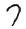
(정답률: 75%)
83. 지구상 유체의 강체회전 운동에서 와도를
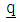
, 지구의 회전각속도를 ω라 할 때 다음 중 옳은 것은?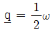
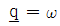
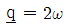
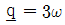
(정답률: 74%)
84. 북반구 중위도에서 한랭전선 통과 시의 풍향변화는?
- 남동풍에서 남서풍으로
- 남서풍에서 북서풍으로
- 북동풍에서 남동풍으로
- 북서풍에서 북동풍으로
(정답률: 76%)
85. 열대성 저기압이 발달하여 태풍(TY급)이 되려면 최대풍속이 얼마에 도달되어야 하는가?
- 34 ~ 50 KTS
- 51 ~ 63 KTS
- 64 KTS 이상
- 128 KTS 이상
(정답률: 67%)
86. 상당 순압모델(Equivalent barotropic model)의 특징이 아닌 것은?
- 밀도는 기압만의 함수이다.
- 풍속은 고도에 따라 증가한다.
- 풍향은 고도에 따라 일정하다.
- 기압면과 온도면은 일치하지 않는다.
(정답률: 50%)
87. 상층 일기도의 이용에 관하여 바르게 설명한 것은?
- 300 hPa 면에서는 온도가 지형, 복사의 영향을 받으므로 전선분석이 용이하다.
- 300 hPa 제트기류 출구의 좌측에 하강기류, 우측에 상승기류가 있으며, 입구에서는 좌측에 상승기류, 우측에 하강기류가 있다.
- 500 hPa 기류가 지상 한랭전선에 수직으로 불면 이 전선은 활성으로서 악천이 나타난다.
- 500 hPa 일기도의 한랭기압골에서 등온선의 진폭이 등고선의 진폭보다 클 경우에는 그 기압골의 후방에 약한 상승기류가 있고, 전방에 약한 하강기류가 있다.
(정답률: 54%)
88. 다음 그림은 공기의 포화수증기압 곡선을 그린 것이다. 현재 기온이 T℃인 공기의 이슬점온도 Td가 t℃일 때 이 공기의 상대습도는? (단, 그래프의 세로축은 수증기압(hPa)이다.)
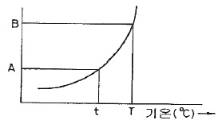
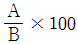
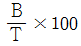
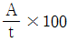
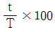
(정답률: 75%)
89. 다음 고층 관측자료에서 숫자 5.0 이 의미하는 것은?
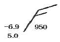
- 고도
- 기온
- 습수
- 노점온도
(정답률: 66%)
90. 우리나라의 장마전선 양쪽에 있는 각 기단은?
- cP와 mP
- cT와 cP
- mT와 cT
- mP와 mT
(정답률: 80%)
91. 우리나라에서 여름철에 자주 통과하는 저기압은 주로 어느 지역에서부터 이동하여 오는가?
- 일본열도
- 중국 북부지역
- 시베리아와 몽골
- 중국의 양자강 유역과 동중국해
(정답률: 67%)
92. Richardson's number가 풍속의 고도 경도에 대해 가지는 관계로 옳은 것은?
- 풍속의 고도경도에 정비례한다.
- 풍속의 고도경도에 반비례한다.
- 풍속의 고도경도의 제곱에 정비례한다.
- 풍속의 고도경도의 제곱에 반비례한다.
(정답률: 47%)
93. 지상 기상 전문에서 노점온도가 영하일 때 노점온도를 표시하는 방법은?
- 노점온도 값에 “( )” 를 붙인다.
- 노점온도 값 앞에 “1” 을 붙인다.
- 노점온도 값 앞에 “0” 을 붙인다.
- 노점온도 값 앞에 “-” 부호를 붙인다.
(정답률: 76%)
94. 온위를 정의하는 식은? (단, P는 기압, R은 기체상수, CP는 정압비열, T는 기온)
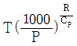
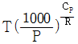
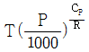
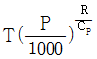
(정답률: 70%)
95. 다음 그림에서 한랭전선과 온난전선을 바르게 표시한 것은?
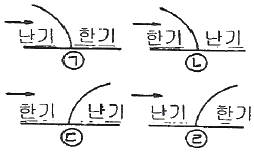
- ㉠, ㉢
- ㉠, ㉣
- ㉡, ㉢
- ㉡, ㉣
(정답률: 79%)
96. 안개가 끼기 쉬운 조건으로 잘못된 것은?
- 먼지가 적을수록 잘 생긴다.
- 상대습도가 높을수록 잘 생긴다.
- 기온의 일교차가 클수록 잘 생긴다.
- 온도차가 큰 공기가 접촉할수록 잘 생긴다.
(정답률: 80%)
97. 600 hPa에서 와도장의 이류속도는 그 고도에서 풍속의 몇 % 정도의 속도로 이동하는가?
- 80%
- 100%
- 150%
- 200%
(정답률: 71%)
98. 전선에 대한 설명으로 틀린 것은?
- 온난전선의 한기역에서 최대기압 하강구역이 나타난다.
- 한랭전선은 연직방향으로 바람방향이 반전(Backing)한다.
- 전선면이 지나는 지역의 단열선도에서는 불안정층이 나타난다.
- 전선의 이동속도는 전선후면의 풍속의 직각성분에 비례한다.
(정답률: 40%)
99. 다음 중 온대성 저기압이 발생하기 가장 쉬운 곳은?
- 고기압 내
- 태풍 부근
- 정체전선상
- 활바한 한랭전선상
(정답률: 60%)
100. 지표 부근의 공기가 이 고도에 이르면 그 후에는 공기가 자동적으로 계속 상승하게 된다. 지표 부군의 공기괴가 지표의 가열로 에너지를 받은 후 단열적으로 상승하여 포화에 이르게 되는 이 고도는?
- 평형고도
- 대류응결고도
- 상승응결고도
- 자유대류고도
(정답률: 63%)
분리형 최저온도계의 복도(reset)는 내려오지 않는 수은을 수은사 부분을 잡고 강제로 강하게 내려 뿌려서 현재 기온으로 한다는 것은 맞는 설명이다. 이는 수은이 끓는 온도인 -38.83℃보다 낮은 온도에서 사용하기 위한 방법이다.
겸용 최고·최저온도계는 기온의 상승·하강 시 지표의 한쪽 방향으로만 움직이게 한 것이 주원리이다는 설명은 틀린 설명이다. 겸용 최고·최저온도계는 두 개의 지표를 사용하여 최고온도와 최저온도를 동시에 측정할 수 있는 기기이다.
분리형 최저온도계는 알코올 속에 지표를 넣어 두어 지표가 표면장력에 의하여 끌려 내려오게 한 것이 원리이다는 설명은 맞는 설명이다.
분리형 최고온도계는 수은을 이용하여 유리봉으로 유점을 만들어 기온이 상승할 때 일방통행으로 상승하게만 만든 것이 주원리이다는 설명은 맞는 설명이다.